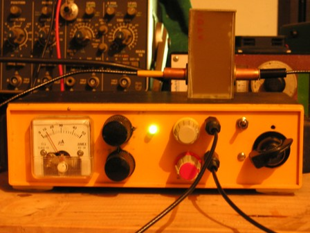
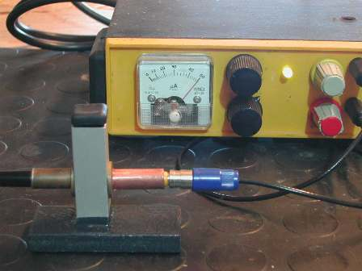

Dopo essere stato preventivamente testato al banco mentre cresceva (ved. foto nel post precedente), ho slegato dal lettino il circuito "piccolo Frankestein" liberandolo dalla miriade di fili che lo alimentavano e l'ho piazzato in una scatoletta che avevo, in modo che fosse indipendente e potesse cominciare a muoversi autonomamente facendo il lavoro che doveva fare.
Sul pannello frontale dell'apparecchio ci sono tutti i comandi di regolazione dell'accrocco, così si può smanettare a piacere senza fare acrobazie.
Oltre all'interruttore di accensione e al relativo LED, si vedono:
- il milliamperometro per le misure relative di assorbanza
- la regolazione della corrente del LED di illuminazione
- la regolazione dell'offset (azzeramento)
- la regolazione dell'amplificazione dei due stadi OP Amp
- l'uscita per l'alimentazione del LED di illuminazione
- l'entrata del segnale e di alimentazione del fototransistor
- l'attenuatore per lo strumento di uscita
Lo schema come detto è volutamente semplice (era il requisito fondamentale che mi ero imposto), quindi la difficoltà maggiore è stata come al solito la realizzazione meccanica ed il cablaggio del tutto, dato che occorre fare un lavoretto che sia anche esteticamente presentabile.

Le foto, fatte in qualche modo di sera, rendono un'idea del marchingegno finito durante una misura sotto descritta.

Prove di assorbimento
Il test iniziale è stato fatto (illuminando solo a infrarosso) diverse soluzioni di dicromato di potassio K2Cr2O7 e di cloruro di rame CuCl2.
Il dicromato (pur se intensamente arancio) porta a irrisorie variazioni di assorbimento in funzione della concentrazione; tutto l'opposto invece col cloruro di rame (impercettibilmente azzurrino) nelle medesime condizioni: 1 g/l di CuCl2 fornisce in uscita un notevolissimo assorbimento. (Ho voluto cercare il limite del sistema per questo catione a IR e ho visto che mi rivela con certezza meno di 20 mg/l di Cu++).
La prova nelle foto si riferisce al test di assorbimento sempre del K2Cr2O7, ma stavolta nel vicino ultravioletto (400 nm).
Cambiando la lunghezza d'onda stavolta il colpo di scena è notevole: mentre nell'IR l'indice non si muoveva nemmeno con una soluzione più arancio della Fanta, nell'UV è sufficiente 1 ppm (!) di dicromato per portare l'indice dello strumento dal fondo scala (50) al valore 10!
Inutile dire che a questa estrema diluizione la soluzione è perfettamente trasparente e incolora all'occhio umano.
Un'altra prova significativa e di grande soddisfazione è stato verificare l'assorbimento nel verde (530 nm) dello ione permanganato MnO4-
Questo anione ha un'elevatissimo potere colorante nel viola (le sue soluzioni diluite sono di un meraviglioso violetto) e quindi, secondo il Circolo di Ostwald dovrebbe assorbire nel verde... andiamo a verificare.
Ho dovuto diluire, diluire, e ancora diluire per raggiungere il limite di sensibilità del sistema: il mio aggeggio distingue chiaramente tra l'acqua e una sol. normal/centomillesima! di permanganato KMnO4, naturalmente del tutto incolora.
E così via... molto irregolarmente le prove sono ancora in corso; mi propongo di fare quelle dei sali ferrici tiocianato e ferrocianuro (rispettivamente nel blù e nel giallo), di alcune sostanze organiche, di altri cationi non ancora visti e di quant'altre la fantasia suggerirà nei ritagli di tempo.
La sensibilità potrebbe ovviamente aumentare avendo la possibilità di variare "in continuo" la lunghezza d'onda dell'illuminazione, poichè in genere l'assorbimento avviene per bande e per picchi, e non è detto che la frequenza del mio LED illuminatore cada proprio sul picco massimo... anzi è del tutto improbabile. Ma variare lambda in continuo vorrebbe dire usare un monocromatore, e allora l'apparecchio non sarebbe più il giocattolino che è.
Per concludere, voglio anche ringraziare il dott. Lorenzo M., che mi ha fornito dei preziosi suggerimenti e preparato una bella tabella colorimetrica sperimentandola personalmente con apparecchi seri: tutto ciò mi è stato di notevole ausilio per indirizzarmi alla "luce" (è proprio il caso di dire...) con cui lavorare.